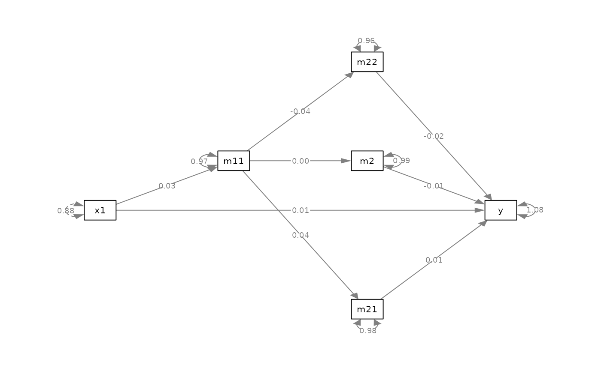
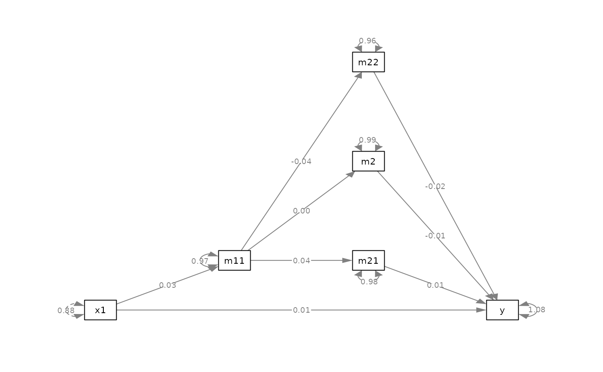

Set the layout of variables in a mediation model in the typical left-to-right style automatically.
Arguments
- object
It can be the output of
lavaan::sem()orlavaan::lavaan(), or alavaan-class object. The model must have abetamatrix of the structural path. It can also be aqgraphobject generated bysemPlot::semPaths(). A `beta“ matrix will be reconstructed from the graph.- x
The variables that will be treated as (pure)
xvariables: placed on the left of the plot, with no variables predicting them. IfNULL, the default, thexvariable(s) will be identified automatically.- y
The variables that will be treated as (pure)
yvariables: placed on the right of the plot, with no variables predicted by them. IfNULL, the default, theyvariable(s) will be identified automatically.- exclude
The variables to be omitted from the plot, typically the covariates ("control variables") in a model. If
NULL, the default, all variables involved in the structural paths will be used in the plot. It is possible to excludey-variables. However, excluding mediators is not allowed.- v_pos
How the mediators are to be positioned vertically in the first pass. If
"middle", the function will try to position them close to the center of the plot. If"lower", it will try to position them to the lower part of the plot. If"upper", it will try to position them to the upper part of the plot.- v_preference
The preference in shifting the mediators upward (
"upper") or downward ("lower") in the second pass to avoid blocking or overlapping with any paths in the models. It is used only whenv_posis"middle". Ifv_posis"lower", thenv_preferencewill be forced to be"lower". Ifv_posis"upper", thenv_preferencewill be forced to be"upper".- output
The format of the output, used if
update_plotisFALSE. If"matrix", the output is a two-dimension character matrix with the names of the variables. If"xy", the output is a two-column matrix of the relatived x- and y-positions of each variables.- update_plot
Logical. Used if
objectis aqgraphobject. IfTRUE, the function returns a modifiedqgraphobject with the new layout. IfFALSE
Value
If object is a lavaan-class
object, or if update_plot is FALSE,
it returns
a two-dimension layout matrix of the
position of the nodes, or a
two-column matrix of the x-y positions
of the nodes, depending on the
argument output.
If object is a qgraph object
and update_plot is TRUE, it
returns a qgraph object with the
the modified layout.
Details
Typically, a path model with some
x variables, some y variables,
and some mediators are drawn from
left to right. This function tries
to generate the layout matrix
automatically, meeting the following
requirements:
The predictor(s),
xvariables(x), is/are placed to the left.The outcome variable(s),
yvariable(s), is/are placed to the right.The mediator(s) are positioned between
xvariable(s) andyvariable(s) such that all paths point to the right. That is, no vertical path.The vertical position(s) of the mediator(s) will be adjusted such that no path passes through a mediator. That is, all paths are visible and not blocked by any mediator.
See also
set_sem_layout(). The
output of auto_layout_mediation()
can be used by set_sem_layout().
Examples
library(lavaan)
library(semPlot)
# Create a dummy dataset
mod_pa <-
"
m11 ~ c1 + x1
m21 ~ c2 + m11
m2 ~ m11 + c3
m22 ~ m11 + c3
y ~ m2 + m21 + m22 + x1
"
fit <- lavaan::sem(
mod_pa,
do.fit = FALSE
)
dat <- simulateData(
parameterTable(fit),
sample.nobs = 500,
seed = 1234
)
fit <- lavaan::sem(
mod_pa,
dat
)
# Set the layout
m <- auto_layout_mediation(
fit,
exclude = c("c1", "c2", "c3")
)
pm <- semPlotModel(fit) |> drop_nodes(c("c1", "c2", "c3"))
semPaths(
pm,
whatLabels = "est",
layout = m
)

# v_pos = "lower"
m <- auto_layout_mediation(
fit,
exclude = c("c1", "c2", "c3"),
v_pos = "lower"
)
pm <- semPlotModel(fit) |> drop_nodes(c("c1", "c2", "c3"))
p0 <- semPaths(
pm,
whatLabels = "est",
layout = m
)
# v_pos = "upper"
m <- auto_layout_mediation(
fit,
exclude = c("c1", "c2", "c3"),
v_pos = "upper"
)
pm <- semPlotModel(fit) |> drop_nodes(c("c1", "c2", "c3"))
p0 <- semPaths(
pm,
whatLabels = "est",
layout = m
)

# Can modify a qgraph
pm <- semPlotModel(fit) |> drop_nodes(c("c1", "c2", "c3"))
p <- semPaths(
pm,
whatLabels = "est"
)
p2 <- auto_layout_mediation(p)
plot(p2)